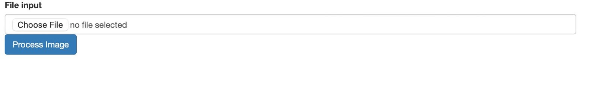

Réalisé par LUCAS Garance, ZIDAT Lydia, BOUCHOUCHI Nour, BORCHANI Sofia et FAURE Guillaume.
Introduction
L'objectif de ce projet est d’entraîner un modèle supervisé de machine learning à tagger automatiquement des images avec une étiquette textuelle qui reflète le contenu visuel de l’image. Dans notre projet, nous avons pris en considération cinq tags : dog, cat, bird, car et flower. Le modèle a été entrainé sur une base d'image issue d'un scrapping de pixelfed. \nPour plus de détails vous pouvez retrouver ci-dessous le lien du rapport :
Image Docker
Lien vers l'image Docker : ici
Tutorial
- Prerequis : Docker doit être installé sur la machine
- Etape 1: En ligne de commande Bash, se placer dans son dossier courant et lancer
docker pull redsprod/reds:v1 - Etape 2:Lancer le conteneur à partir de l'image Docker
docker run -p 8080:5000 reds_pred:tag(si port 8080 déjà occupé, choisir un autre) - Etape 3: Ouvrir le deuxième lien http dans un navigateur ou http://127.0.0.1:8080/ ou http://localhost:8080 (si un autre port que 8080 à été choisi indiqué celui-ci)
- Etape 4: Cliquer sur "choisir un fichier pour uploader l'image dont vous souhaitez réaliser le tagging 
- Etape 5: Cliquer sur "process image" pour lancer la prédiction du tagging
- Etape 6: Le tag de votre image s'affiche en haut de celle-ci